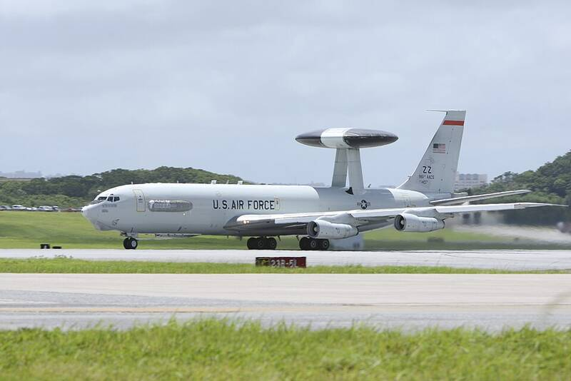

Kadena Air Base
Okinawa, Japan

The largest U.S. Air Force base in the Pacific. 1
Open in the interactive Watcher
Sources
- Kadena Air Base Wikipedia
Okinawa, Japan

The largest U.S. Air Force base in the Pacific. 1
Open in the interactive Watcher